Take 2, warm rock with blunt stalactites and water drops. Risk: points can still read as spikes. 15 tiles, 11 colours.
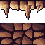
Tile sheet: rim row, hang row, two fill rows.
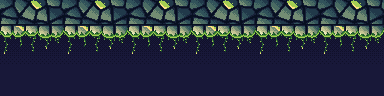
Take 3, mossy rock with a soft green fringe, vines and two glow buds. 16 tiles, 14 colours.
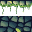
Tile sheet: rim row, hang row, two fill rows.
2. Floor (kill strip, gum colours unchanged)
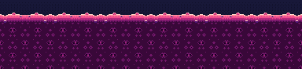
F0: floor as it is today.
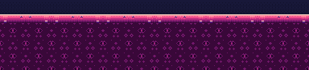
F1: same gum with a straight bright lip instead of the wavy top, so it can slope without notches.
3. Edge smoothing, same window sequence in every picture
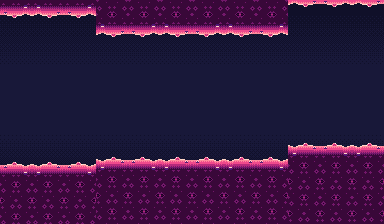
Today: gum on both sides, edge jumps at each 192 px chunk start.
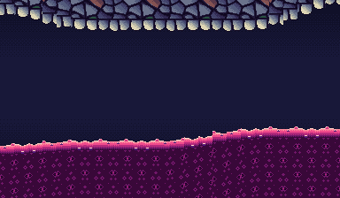
Option A: take 1 roof, edge eased over six 16 px columns, no new tiles. Small steps remain and the rock pattern breaks between columns.
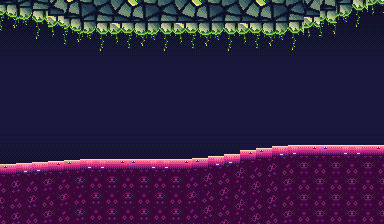
Option A with take 3 roof and flat-lip floor.
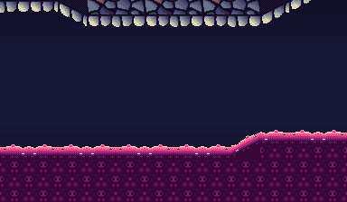
Option B: take 1 roof, ramp tiles with a 2:1 slope, today's floor rim sheared.
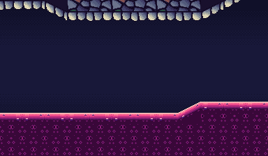
Option B with the flat-lip floor (F1). This is the combination in the animation.
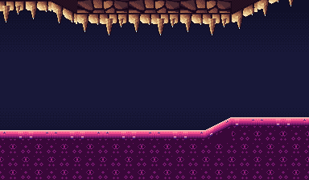
Option B with take 2 roof.
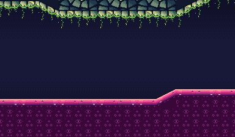
Option B with take 3 roof.
Option B ramp tiles
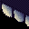
Roof ramp block for take1_slate: 4 tiles, mirrored for the other direction.
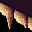
Roof ramp block for take2_stalactite: 4 tiles, mirrored for the other direction.Roof ramp block for take3_moss: 4 tiles, mirrored for the other direction.Floor ramp block, 8 animation frames side by side.
4. Scroll, option B + take 1 roof + flat-lip floor
150 steps at 45 pixels a second (real start speed), already 3x.